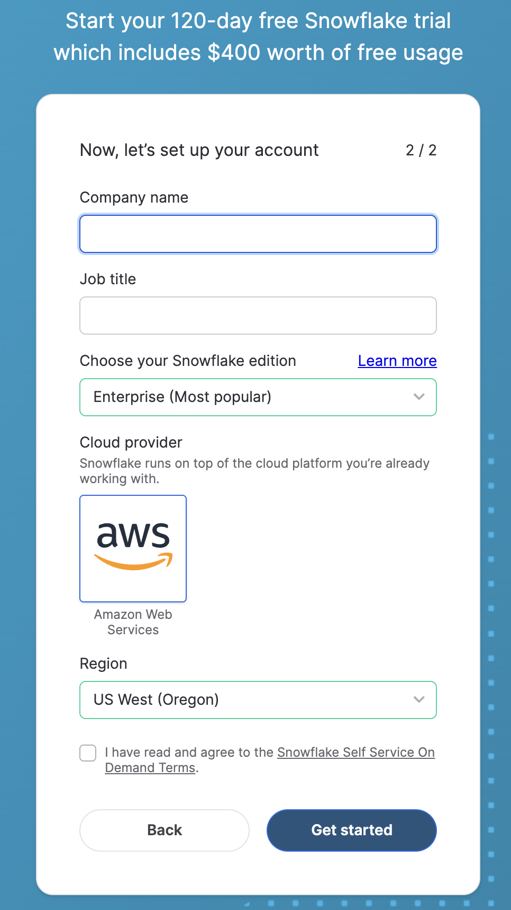
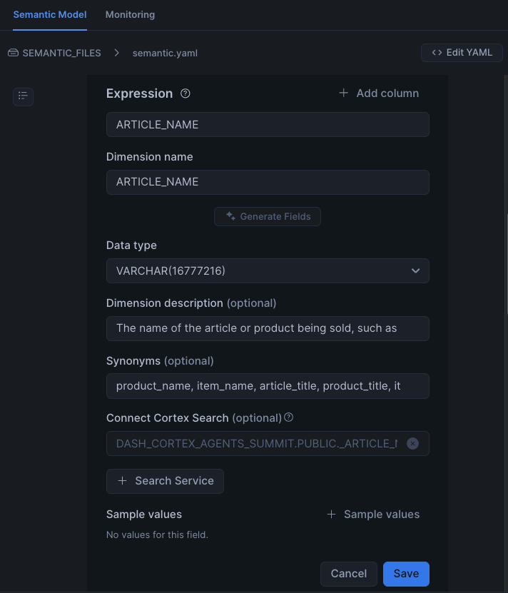
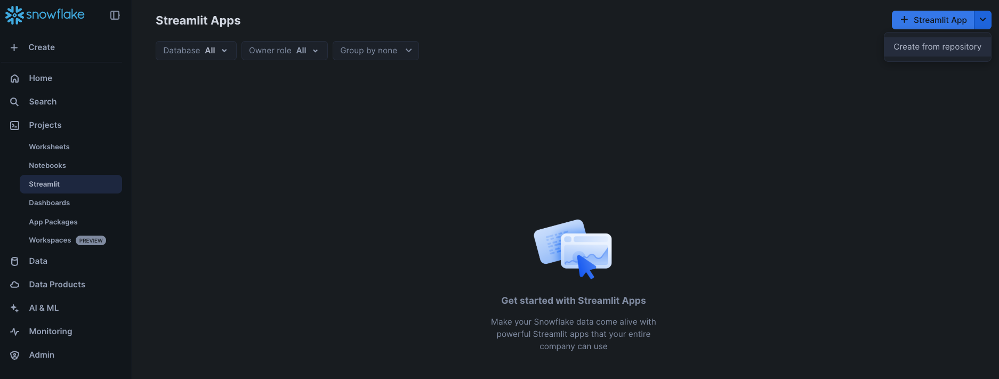
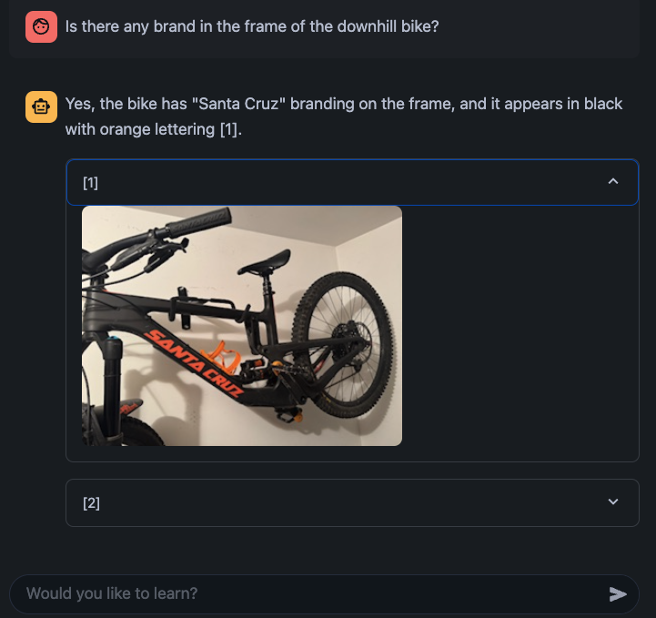
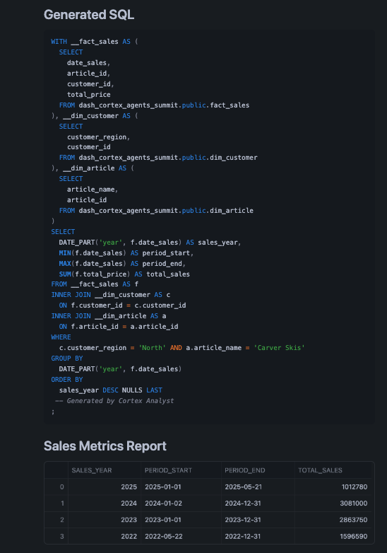

In this guide, you'll learn how to build a Data Agent using Snowflake Cortex AI that can intelligently respond to questions by reasoning over both structured and unstructured data.
We'll use a custom dataset focused on bikes and skis. This dataset is intentionally artificial, ensuring that no external LLM has prior knowledge of it. This gives us a clean and controlled environment to test and evaluate our data agent. By the end of the session, you'll have a working AI-powered agent capable of understanding and retrieving insights across diverse data types — all securely within Snowflake.
What You Will Learn
- How to setup your environment using Git integration and Snowflake Notebooks
- How to work with semantic models and setup Cortex Analyst for structured data
- How to setup Cortext Search for unstructured data like PDFs and images
- How to use Cortex Agents REST API that uses these tools in a Streamlit application
What You Will Build
A Data Agent packaged in a Streamlit application that can intelligently respond to questions by reasoning over both structured and unstructured data.
What You Will Need
- A Snowflake account as described specifically in Step 2 Snowflake Trial Account.
To complete this lab, you'll need to create a Snowflake account.
- Click on this link to create a free trial account.
- Complete the first page of the form on the page.
- On the next section of the form, be sure to set the Snowflake edition to Enterprise (Most popular)).
- Select AWS – Amazon Web Services as the cloud provider.
- Select US West (Oregon) as the region.
- Complete the rest of the form and click Get started.

In Snowsight, create a SQL Worksheet. Then, copy/paste the following statements and execute them from top to bottom.
CREATE or replace DATABASE DASH_CORTEX_AGENTS_SUMMIT;
CREATE OR REPLACE API INTEGRATION git_api_integration
API_PROVIDER = git_https_api
API_ALLOWED_PREFIXES = ('https://github.com/Snowflake-Labs/')
ENABLED = TRUE;
CREATE OR REPLACE GIT REPOSITORY git_repo
api_integration = git_api_integration
origin = 'https://github.com/Snowflake-Labs/sfguide-build-data-agents-using-snowflake-cortex-ai';
-- Make sure we get the latest files
ALTER GIT REPOSITORY git_repo FETCH;
-- Setup stage for Docs
create or replace stage docs ENCRYPTION = (TYPE = 'SNOWFLAKE_SSE') DIRECTORY = ( ENABLE = true );
-- Copy the docs for bikes
COPY FILES
INTO @docs/
FROM @DASH_CORTEX_AGENTS_SUMMIT.PUBLIC.git_repo/branches/main/docs/;
ALTER STAGE docs REFRESH;
We will use Snowflake Notebook to setup the tools that will be used by Snowflake Cortex Agents.
Let's get started!
On the left hand navigation menu, select Databases DASH_CORTEX_AGENTS_SUMMIT » PUBLIC » Git Repositories » GIT REPO and select setup_tools.ipynb Notebook that is already available in your Snowflake account as shown below.

Give it a name and select other options including DASH_CORTEX_AGENTS_SUMMIT and PUBLIC for location and Run on warehouse for Python environment as shown below.

The semantic model maps business terminology to the structured data and adds contextual meaning. It allows Cortex Analyst to generate the correct SQL for a question asked in natural language.
Open the semantic model
On the left hand navigation menu, click on AI & ML » Studio and select Cortex Analyst

Select the existing semantic.yaml file located in DASH_CORTEX_AGENTS_SUMMIT » PUBLIC » SEMANTIC_FILES as shown below.

Test the semantic model
Let's ask these analytical questions to test the semantic file:
- What is the average revenue per transaction per sales channel?
- What products are often bought by the same customers?
Cortex Analyst and Cortex Search Integration
Using Cortex Analyst integration with Cortex Search, we can improve the retrieval of possible values of a column without listing them all in the semantic model file. Let's try it as example for the ARTICLE NAMES.
Click on DIM_ARTICLE -> Dimensions and edit ARTICLE_NAME. Here you will see that some sample values have been provided.

Let's see what happens if we ask the following question:
- What are the total sales for the carvers?
At this point, you may see this response:

Now let's see what happens when we integrate the ARTICLE_NAME dimension with the Cortex Search Service we created in the Notebook (_ARTICLE_NAME_SEARCH). If you haven't run it already in the Notebook, execute this in the same SQL worksheet as you opened/created before:
CREATE OR REPLACE CORTEX SEARCH SERVICE _ARTICLE_NAME_SEARCH
ON ARTICLE_NAME
WAREHOUSE = COMPUTE_WH
TARGET_LAG = '1 hour'
EMBEDDING_MODEL = 'snowflake-arctic-embed-l-v2.0'
AS (
SELECT
DISTINCT ARTICLE_NAME
FROM DIM_ARTICLE
);
Back in the Semantic model UI:
- Remove the sample values provided
- Click on + Search Service and add _ARTICLE_NAME_SEARCH
It should look like this:

Click on Save, also save your semantic file (top right) and ask the same question again:
- What are the total sales for the carvers?
Notice that now Cortex Analyst is able to provide the right answer because of the Cortex Search integration, we asked for "Carvers" but found that the correct article to ask about is "Carver Skis":

Now that we have the tools ready, we can create a Streamlit app that puts it all together using Cortex Agents API API.
We are going to leverage the code from streamlit_app.py
On the left hand navigation menu, click on Projects » Streamlit » Streamlit App on the top right and select Create from repository as shown below.

Under File location in repository click on Select main file

Select the streamlit_app.py file located in DASH_CORTEX_AGENTS_SUMMIT » PUBLIC » Git Repositories » GIT REPO and click on Select file.

Give it a name and select other options including DASH_CORTEX_AGENTS_SUMMIT and PUBLIC for location and Run on warehouse for Python environment as shown below.

Open the Streamlit app and let's check it out.
Unstructured Data
These are questions where the answers can be found in the PDF documents.
- What is the guarantee of the premium bike? or What is the warranty on the premium bike?

The code contains a display_citations() function as an example to show what pieces of information the Cortex Agent used to answer the question. In this case, we can see how it cites the warranty information extracted from the PDF file.
Let's try these other questions.
- What is the length of the carver skis?

Since we have processed images, the extracted descriptions can also be used by Cortex Agents to answer questions. Here's one example:
- Is there any brand in the frame of the downhill bike?

Fell free to explore the PDF documents and image files to ask your own questions.
Structured Data
These are analytical questions where the answers can be found in structured data stored in Snowflake tables.
- How many carvers are we selling per year in the North region?
Notice that for this query, all 3 tables are used. Also note that the Cortex Search integration in the semantic model understands that the article name is "Carver Skis".

Let's try these other questions.
- How many infant bikes are we selling per month?
- What are the top 5 customers buying the carvers?
Cortex Agents
When calling the Cortex Agents API, we define the tools the Agent can use in that call. You can read the simple Streamlit App you set up to understand the basics before trying to create something more elaborat and complex.
We define the API_ENDPOINT for the agent, and how to access the different tools its going to use. In this lab, we have two Cortex Search services to retrieve information from PDFs about bikes and skis, and one Cortex Analyst service to retrieve analytical information from Snowflake tables. The Cortex Search services were created in the Notebook and the Cortex Analyst uses the semantic model we verified earlier.

All of these services are added to the payload sent to the Cortex Agents API. We also provide the model we want to use to build the final response, the tools to be used, and any specific instructions for generating the response.
Congratulations! You've learned how to securely build data agents and agentic application in Snowflake.
What You Learned
- How to setup your environment using Git integration and Snowflake Notebooks
- How to work with semantic models and setup Cortex Analyst for structured data
- How to setup Cortext Search for unstructured data like PDFs and images
- How to use Cortex Agents REST API that uses these tools in a Streamlit application